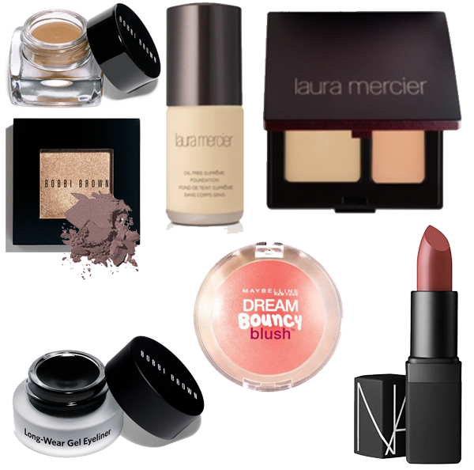

Let’s talk makeup! So I’m of the stick to the same brand forever and ever amen variety in the makeup department but I have switched things up a bit in the last year and I wanted to fill y’all in on it. This is the stuff I wear every single day…
Long-Wear Cream Shadow – Ballet Pink This is the most recent addition to my lineup and the color shown here doesn’t really portray it correctly but it’s the perfect base shade. I put this all over my lid all the way up to under my eyebrow. In the past I have had problems with cream eye shadows…I seem to have a sensitivity to whatever is in them and they make my eyes hate being alive. This doesn’t bother me in the least. AND the great thing about this is that it makes whatever you put on top of it a truer shade, it pops out more.
Shimmer Wash Eye Shadow – Heather Mauve I just love this color. It’s sort of a mashup of purple and grey and taupe with a touch of shimmer. And I am NOT a shimmer girl.
Long-Wear Gel Eyeliner – Black Ink I have been using this for years and I will never ever go back to a pencil, you can’t make me.
Laura Mercier Secret Camouflage – SC2 My favorite concealer thus far. I use a fat concealer brush from Sephora to apply it.
Laura Mercier Oil Free Suprême Foundation – Blush Ivory I also use a brush to apply this Laura Mercier foundation. Once I started using a brush to apply foundation I don’t think I could go back to using a sponge or my fingers, I just think it goes on so much better with a brush.
Maybelline New York Dream Bouncy Blush – Peach Satin This was me dipping my toe in the water with regards to cream blush. I didn’t want to commit to something expensive because I wasn’t sure if I was going to like it or not. So I went cheap and hit the lotto. When I mentioned that I had started using this to Der she told me to trust her and use it with a regular brush even though its cream. So I had a leftover foundation brush from a set that I wasn’t using and went for it and she was SO right! Thank you Der!
Nars Semi Matte Lipstick – Pigalle This is also a fairly recent purchase. I’ve been using Bobbi Brown Lipstick in Brownie for a long long long time and it was getting low and just thought I might try something new. I LOVE this color.
What’s new with y’all? What have y’all recently found and loved?


{kind=link}
Recent Comments